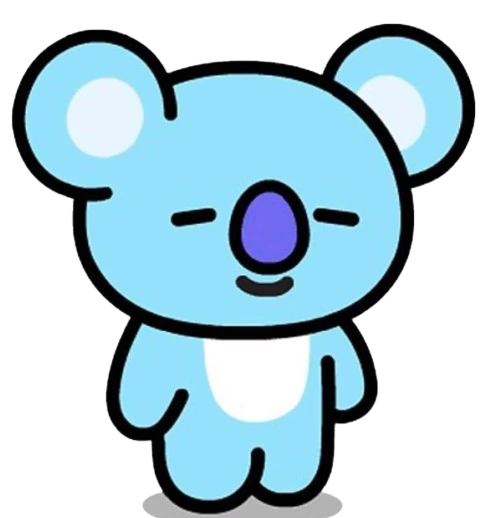
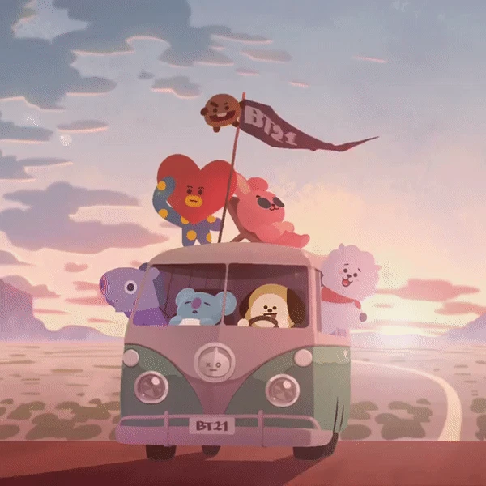
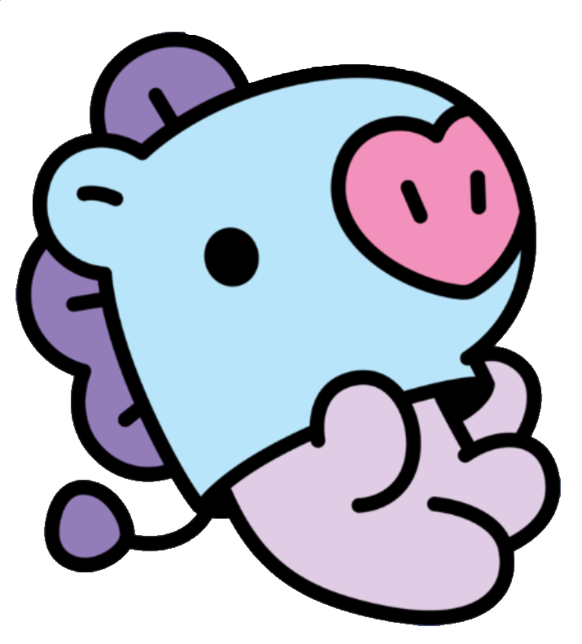
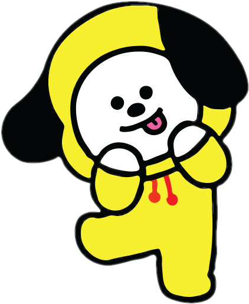
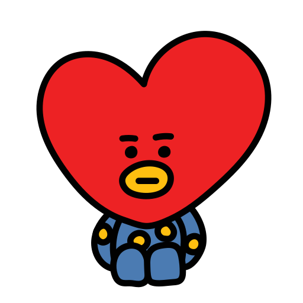
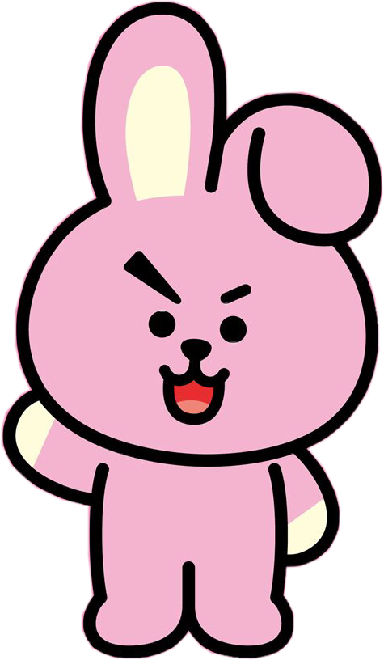

KOYA
RM
Un koala inteligente y tranquilo que representa a RM.
Bangtanpedia

BT21 es el primer proyecto de LINE FRIENDS Creators, nacido a finales de 2017 a través de una colaboración creativa directa entre BTS y LINE FRIENDS. Cada integrante diseñó su propio personaje expresando su personalidad e historia.
Desde su debut, el universo de BT21 ha traspasado fronteras participando en series animadas en YouTube (como BT21 UNIVERSE), videojuegos oficiales (*Puzzle Star BT21*, *LINE POP2*), colaboraciones con marcas globales (Uniqlo, Converse, McDonald's), videos musicales y una inmensa línea de coleccionables a nivel mundial.

Un koala inteligente y tranquilo que representa a RM.
Una adorable alpaca conocida por su personalidad amable y su amor por la comida.
Un pequeño personaje con una personalidad traviesa que representa a SUGA.

Un personaje lleno de energía y misterio que representa a j-hope.

Un pequeño cachorro lleno de energía que representa a Jimin.

Un curioso personaje proveniente del planeta BT, creado por V.

Un pequeño personaje con una personalidad fuerte y determinada.
Un personaje que representa la protección y el vínculo entre BTS y ARMY.